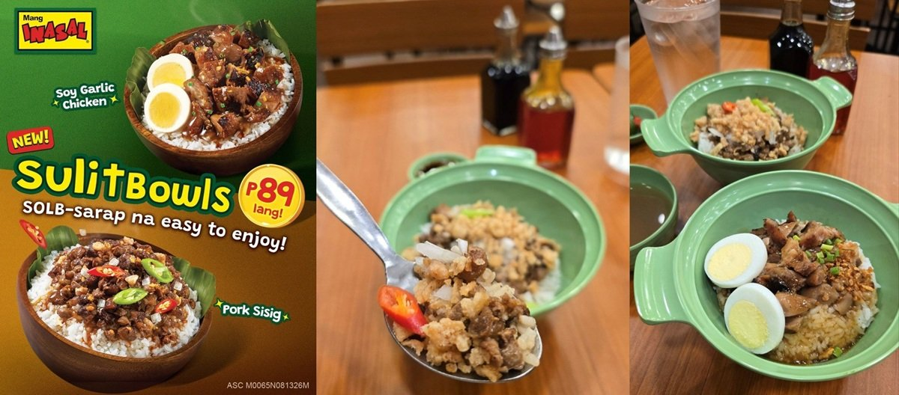

Mang Inasal goes to ₱89 with Sulit Bowls, ten pesos under Jollibee’s own value line
17 Oct 2026
Wazzup.PH: Mang Inasal launched Sulit Bowls from ₱89 in Metro Manila and Luzon, with Visayas and Mindanao due within the month. There are two variants. Soy Garlic Chicken is grilled chicken with garlic bits, spring onion, sliced egg and soy-garlic sauce over rice, and Pork Sisig is sisig with creamy sauce over rice. They sell through dine-in, takeout, drive-thru and delivery. President Mike V. Castro pitched it as delicious, filling, convenient and affordable. It lands while sister brand Jollibee runs Burger Steak bundles from ₱99 through Dec 31.
Operator read: both bowls are built on cost-friendly protein. Sisig runs on pork, and PSA had fresh pork with bones at ₱295.58/kg in late September, down from ₱327.03 a year earlier. Chicken in a bowl stretches less meat across more rice. A single-vessel bowl is also faster on the line and travels better on delivery than a plated meal. For an independent the copy-paste move is format, not price: one or two rice bowls built on a cheaper cut, an egg and a signature sauce, priced just above ₱100, with a drink attach. Watch whether JFC’s brands end up competing with each other on price, because a ₱89–₱99 band held through Christmas resets what guests expect a quick lunch to cost. Flag: brand release, no volume or margin data.